第 12 章 辐射：过程与性质#
本章解决：导热和对流都要介质，热辐射不需要——它是物质因有限温度而发射的电磁波，把热量穿过真空送出去。本章先给辐射场建立"词汇表"：用立体角和辐射强度描述能量朝哪个方向、在哪个波长走，再用发射功率、投入辐射、有效辐射、净辐射通量四个量管住一个表面的辐射收支。然后立起黑体这把标尺——普朗克分布、维恩位移、斯特藩–玻尔兹曼定律和波段分数表——并把实际表面的发射率、吸收比、反射比、透射比挂到这把标尺上，推出基尔霍夫定律与灰体（漫灰表面）近似的适用条件。最后把这套语言用到最大的辐射系统上：太阳–大气–地球的环境辐射，从太阳常数一路讲到天空有效温度和夜间辐射降温。第 13 章的表面间辐射换热计算，全部建立在本章的物性与漫灰假定之上。
12.0 本章导图#
12.1 基本概念#
把一块温度 \(T_s\) 的固体放进真空里，周围环境温度 \(T_{sur}\)（图 12.1）。真空切断了导热和对流的所有通路，但直觉告诉我们固体还是会冷下来，直到与环境达到热平衡。冷却的机制只有一条：表面发射热辐射，储存的内能因此减少；同时表面也在拦截并吸收来自环境的辐射。只要 \(T_s > T_{sur}\)，净辐射换热速率 \(q_{\mathrm{rad,net}}\) 就是从表面流出的，固体一路降温，直到 \(T_s = T_{sur}\)。
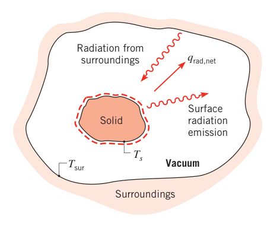
发射的物理起源。热辐射与物质因有限温度而发射能量的速率相联系——你周围的一切都在发射：室内的家具和墙壁，或室外的地面、建筑、大气和太阳。发射机制归结为组成物质的众多电子的振荡与跃迁释放能量，而这些振荡由物质的内能（也就是温度）维持。所以热辐射的发射对应物质内部的热激发状态。
一切形态的物质都发射辐射，但发射发生在哪里？
- 气体与半透明固体（高温下的玻璃、盐晶体等）：发射是体积现象（volumetric phenomenon），从有限体积中冒出的辐射是整个体积内各处局部发射的积分效应（图 12.2a）。
- 固体与液体：内部分子发出的辐射被紧邻的分子强烈吸收，能逃出来的辐射只来自暴露表面以下约 \(1\ \mu m\) 薄层内的分子（图 12.2b）。所以固、液体的发射可以按表面现象处理——只在与纳米、微米器件有关的场合才需要回到体积图像。全书聚焦表面图像。
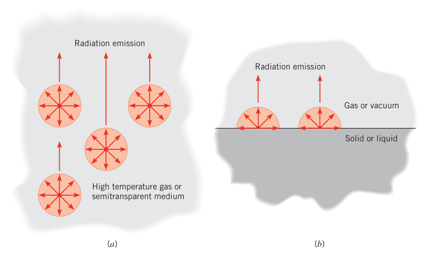
辐射怎么传播。辐射的发射不需要介质，传播更不需要。一种观点把辐射看成光子（photons，量子 quanta）的集合在传播；另一种观点看成电磁波的传播。两种图像都行，波动物理里给它配上频率与波长两个标准属性，在介质中的传播速度 \(c\) 把二者联系起来：
真空中的光速 \(c_0 = 2.998 \times 10^8\ \mathrm{m/s}\)。波长常用微米（micrometer，\(\mu m\)）计，\(1\ \mu m = 10^{-6}\ \mathrm{m}\)。
电磁波谱与热辐射波段。完整的电磁波谱见图 12.3：短波端的伽马射线、X 射线、紫外辐射主要归高能物理与核工程管，长波端的微波和无线电波（\(\lambda > 10^5\ \mu m\)）归电气工程师管。中间区段——约从 \(0.1\ \mu m\) 到 \(100\ \mu m\)，包含一部分紫外、全部可见光（\(0.4\text{–}0.7\ \mu m\)）和全部红外——叫热辐射（thermal radiation）：它既由物质的热状态引起，又反过来影响物质的热状态，所以才是传热学的地盘。
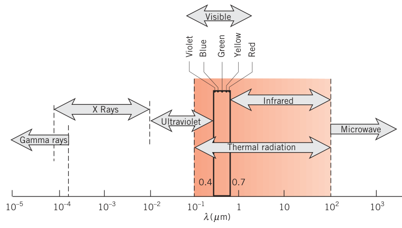
描述热辐射要过两道坎。表面发出的热辐射覆盖一段波长范围，而且强弱随波长变（图 12.4a）——这叫光谱分布（spectral distribution），"光谱的"（spectral）一词就是指这种波长依赖。第二道坎是方向性：表面可能在某些方向上发射得更强，形成发射辐射的方向分布（图 12.4b）。要量化第 1 章引入的发射、吸收、反射、透射，就必须同时处理光谱效应和方向效应——这一章的所有物性定义都按这两根轴展开。
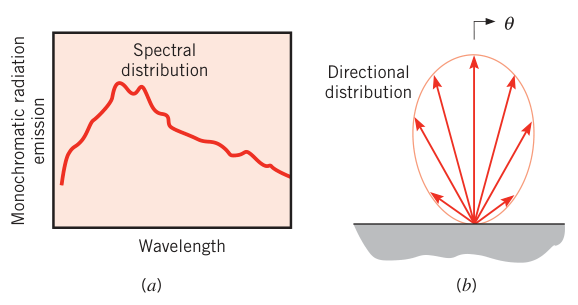
12.2 辐射热流密度#
先给一个表面的辐射收支立四个账本（表 12.1，对应图 12.2b 的表面）。
表 12.1 辐射热流密度（对所有波长、所有方向）
| 通量（W/m²） | 定义 | 备注 |
|---|---|---|
| 发射功率 \(E\) | 表面单位面积发射辐射的速率 | \(E = \varepsilon\sigma T_s^4\)（式 1.5） |
| 投入辐射 \(G\) | 单位面积上辐射入射的速率 | 可被反射、吸收或透射 |
| 有效辐射 \(J\) | 单位面积上辐射离开表面的速率 | 不透明表面 \(J = E + \rho G\) |
| 净辐射热流密度 \(q''_{\mathrm{rad}}\) | 辐射净离开表面的速率 | 不透明表面 \(q''_{\mathrm{rad}} = J - G\) |
- 发射功率（emissive power）\(E\)（W/m²）：单位表面积、对所有波长、所有方向的发射速率。第 1 章已经见过它与黑体的关系 \(E = \varepsilon\sigma T_s^4\)，\(\varepsilon\) 是发射率。
- 投入辐射（irradiation）\(G\)（W/m²）：单位表面积上辐射入射的速率，来源随意——可能来自多个不同温度的表面，也可能来自太阳或激光。
投入辐射落到一个半透明介质（semitransparent medium）上会发生什么？一部分被反射、一部分被吸收、一部分透射过去（图 12.5a）：透射是辐射穿过介质（阳光穿过水层或玻璃板），吸收是辐射与介质相互作用、介质热内能增加，反射是入射辐射被偏转回去、对介质没有任何影响。定义反射比（reflectivity）\(\rho\)、吸收比（absorptivity）\(\alpha\)、透射比（transmissivity）\(\tau\) 分别为被反射、吸收、透射的份额。投入辐射三条路必占其一，所以
没有透射（\(\tau = 0\)）的介质叫不透明（opaque），此时
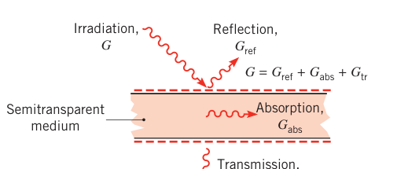
有了这份分配表，再添两个有用的账本：
- 有效辐射（radiosity）\(J\)（W/m²）：离开表面的全部辐射能。对不透明表面，它 = 自身发射 + 投入辐射被反射的部分（图 12.5b）：
半透明介质表面也可以定义有效辐射——那时离开上表面的辐射里还要加上从下方透射上来的部分。
- 净辐射热流密度（net radiative flux）\(q''_{\mathrm{rad}}\)（W/m²）：离开与进入之差：
对不透明表面，把式（12.4）、（12.3）、（1.5）串起来：
半透明表面也有含 \(\tau\) 的类似表达式。净辐射通量（或净辐射换热速率 \(q_{\mathrm{rad}} = q''_{\mathrm{rad}} A\)）直接决定系统内部的温度分布，是传热分析里最重要的量；\(E\)、\(G\)、\(J\) 通常是为了算它而引入的，但在辐射探测与测温这类应用里本身就有用。
拓展：有效辐射这个词别望文生义
国内教材（杨世铭、陶文铨《传热学》）把 radiosity 译作有效辐射：单位时间离开单位表面的总辐射能 \(J = E + \rho G\)。它不等于发射功率 \(E\)——多出来的一块是反射的投入辐射。第 13 章的辐射网络法里，\(J\) 是每个表面节点的"电位"，\(G\) 往往由别的表面给出，\(q''_{\mathrm{rad}} = J - G\) 就是流过节点的"电流"。
问题在于：表 12.1 里这些通量一般不能直接算——它们的方向分布和光谱分布都是未知的。方向效应靠 12.3 节的辐射强度处理，光谱效应靠 12.4 节的黑体辐射处理；发射率、吸收比、反射比、透射比的光谱与方向特性在 12.5、12.6 节补齐。
12.3 辐射强度#
辐射离开表面可以朝任何方向走，我们常想知道它的方向分布；入射到表面的辐射也可能来自不同方向，而表面的响应又依赖来向。方向效应的系统处理工具是辐射强度（radiation intensity）。
12.3.1 数学定义#
辐射传热的数学工具离不开球坐标系。回忆两类"角"（图 12.6）：
- 平面角（plane angle）：圆上两条射线之间的区域，大小 = 弧长与半径之比，\(d\alpha = dl/r\)，单位弧度（rad）；
- 立体角（solid angle）：球面上两条射线之间的区域，大小 = 球面上面积元 \(dA_n\) 与半径平方之比：
单位是球面度（steradian，sr），类比平面角的弧度。
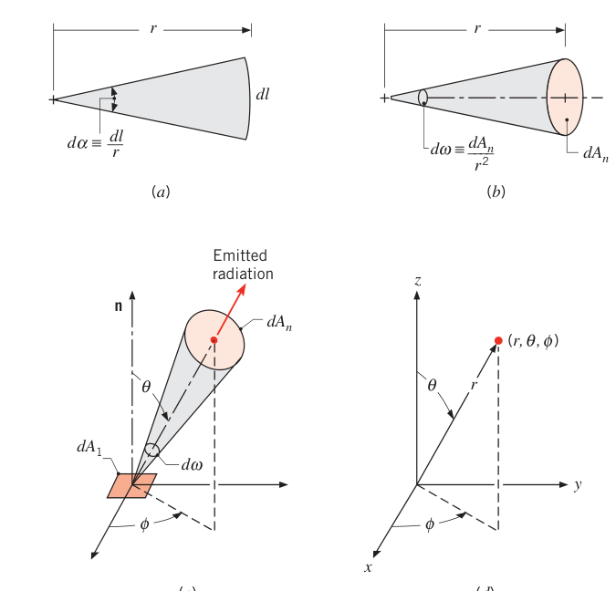
看图 12.6c：面元 \(dA_1\) 沿特定方向发射辐射，方向用球坐标系的天顶角（zenith angle）\(\theta\) 与方位角（azimuthal angle）\(\phi\) 描述。辐射穿过的面元 \(dA_n\) 是个矩形，边长 \(r\,d\theta\) 与 \(r\sin\theta\,d\phi\)，所以 \(dA_n = r^2 \sin\theta\, d\theta\, d\phi\)（图 12.7），代入式（12.7）：
从不透明表面上的面元 \(dA_1\) 看，发射可以进入表面上方的整个假想半球。把式（12.8）在 \(\phi = 0\) 到 \(2\pi\)、\(\theta = 0\) 到 \(\pi/2\) 上积分：
半球的立体角是 \(2\pi\ \mathrm{sr}\)，不是 \(\pi\)——记住这个数，后面 \(E = \pi I\) 的来源就在这。
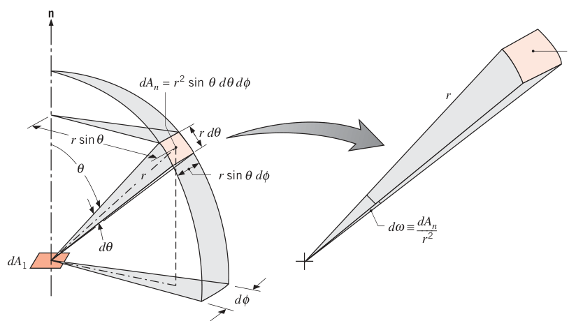
12.3.2 辐射强度及其与发射的关系#
现在问：\(dA_1\) 发射的辐射穿过 \(dA_n\) 的速率是多少？这个量用光谱强度（spectral intensity）\(I_{\lambda,e}\) 表述。正式定义：\(I_{\lambda,e}\) 是波长 \(\lambda\) 处、沿 \((\theta, \phi)\) 方向、每单位垂直于该方向的发射面积、每单位围绕该方向的立体角、每单位波长间隔 \(d\lambda\) 发射的辐射能速率：
注意定义里的面积是 \(dA_1\) 在垂直于辐射方向上的投影，等于 \(dA_1 \cos\theta\)——它就是站在 \(dA_n\) 上的观察者眼中的 \(dA_1\)（原书图 12.8 画的就是这个"面元沿视线压扁成投影面"的图像）。光谱强度的单位是 W/(m²·sr·\(\mu m\))，四个"每"一个都不能少。
把式（12.10）倒过来用（\(dq/d\lambda \equiv dq_\lambda\)）：
它算的是 \(dA_1\) 发射的辐射在 \((\theta, \phi)\) 方向附近 \(d\omega\) 立体角内的传播速率。除以 \(dA_1\) 并代入式（12.8），得到与 \(dA_1\) 相关联的光谱辐射热流密度：
只要 \(I_{\lambda,e}(\lambda, \theta, \phi)\) 已知，往任何有限立体角、任何有限波长区间上积分就能得到相应的热流密度。最重要的积分是半球：定义光谱半球发射功率（spectral hemispherical emissive power）\(E_\lambda\)（W/m²·\(\mu m\)）为波长 \(\lambda\) 处、单位波长间隔、单位表面积、向所有方向发射的速率——也就是发射进 \(dA_1\) 上方假想半球的光谱热流密度（图 12.9）：
注意：\(E_\lambda\) 按实际表面积计，\(I_{\lambda,e}\) 按投影面积计，被积函数里的 \(\cos\theta\) 就是这个差别的化身。
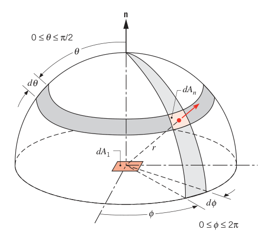
对所有波长积分，得总半球发射功率（total hemispherical emissive power）\(E\)（W/m²）——单位面积、所有波长、所有方向的发射速率：
"发射功率"一词本身就含"所有方向"，所以"半球"这个定语常常省掉，直接叫光谱发射功率 \(E_\lambda\) 或总发射功率 \(E\)（式 1.5 和表 12.1 里的那个 \(E\)）。
漫发射体。发射的方向分布随表面而异，但有一个对很多表面都够用的特例：漫发射体（diffuse emitter）——发射强度与方向无关，\(I_{\lambda,e}(\lambda, \theta, \phi) = I_{\lambda,e}(\lambda)\)。把它从式（12.13）的积分号里拎出来：
同理对总量的式（12.15）：
其中 \(I_e\) 是发射辐射的总强度。系数是 \(\pi\) 而不是 \(2\pi\)——\(\int_0^{2\pi}\int_0^{\pi/2} \cos\theta\sin\theta\, d\theta\, d\phi = \pi\ \mathrm{sr}\)：方位角积出 \(2\pi\)，天顶角积出 \(1/2\)，所以是 \(\pi\)。单位是球面度。
拓展：这就是兰贝特余弦定律
式（12.16）\(E_\lambda = \pi I_{\lambda,e}\) 的另一面是兰贝特余弦定律（Lambert cosine law，也叫朗伯定律）：漫发射体沿 \(\theta\) 方向单位立体角发出的功率正比于 \(\cos\theta\)。直觉图像：强度（按投影面积定义）各方向相同，但观察者看到的投影面积按 \(\cos\theta\) 缩水，所以从切线方向看，表面既"变薄"又"变暗为零"。照明工程里的"朗伯体"（哑光纸、理想漫射屏）就是这个模型。例 12.1 点评 4 专门演练这一点。
12.3.3 与投入辐射的关系#
同一套语言可以搬到入射辐射上（图 12.10）。入射辐射来自别的表面的发射与反射，其光谱强度 \(I_{\lambda,i}(\lambda, \theta, \phi)\) 定义为：波长 \(\lambda\) 处、从 \((\theta, \phi)\) 方向入射、每单位垂直于该方向的截取面积、每单位立体角、每单位波长间隔的辐射能速率。
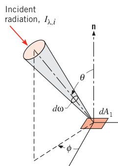
把所有方向的入射加起来就是光谱投入辐射（spectral irradiation）\(G_\lambda\)（W/m²·\(\mu m\)）——波长 \(\lambda\) 处、单位表面积、单位波长间隔的入射速率：
\(\sin\theta\, d\theta\, d\phi\) 是单位立体角；\(\cos\theta\) 因子的来源与前面一样——\(G_\lambda\) 按实际表面积计，\(I_{\lambda,i}\) 按投影面积计。对所有波长积分：
总投入辐射 \(G\) 就是 1.2.3 节和表 12.1 里的那个量。若入射辐射是漫入射（diffusely distributed，\(I_{\lambda,i}\) 与 \(\theta\)、\(\phi\) 无关），积分立刻出结果：
12.3.4 与有效辐射的关系（不透明表面）#
12.2 节说过，有效辐射 \(J\) 管的是离开表面的全部辐射：反射的投入辐射 + 直接发射（图 12.5b），所以它一般不等于发射功率。光谱有效辐射（spectral radiosity）\(J_\lambda\)（W/m²·\(\mu m\)）是波长 \(\lambda\) 处、单位波长间隔、单位表面积离开的辐射速率，与发射+反射的复合强度 \(I_{\lambda,e+r}(\lambda, \theta, \phi)\) 的关系照旧是半球积分：
若表面既是漫反射体又是漫发射体（\(I_{\lambda,e+r}\) 与方向无关）：
再念一遍那句话：热流密度（这里是有效辐射）按实际表面积计，强度按投影面积计。
12.3.5 与净辐射热流密度的关系#
式（12.5）说 \(q''_{\mathrm{rad}} = J - G\)。把式（12.20）和（12.24）代入，净辐射通量可以完全用强度写出来：
形式上各种强度已知就能直接积出净辐射通量，实践中也有人这么算；但更省事的路子（12.4–12.8 节）是把各种强度用黑体强度加发射率、吸收比、反射比表达出来。
【例 12.1】漫发射小表面拦截到三个面上的辐射
已知（Known）：面积 \(A_1 = 10^{-3}\ \mathrm{m^2}\) 的小表面漫发射，测得法线方向发射的总强度 \(I_n = 7000\ \mathrm{W/(m^2 \cdot sr)}\)。发出的辐射被三个小面截获：\(A_2 = A_3 = A_4 = 10^{-3}\ \mathrm{m^2}\)，距 \(A_1\) 均 0.5 m，取向如图。
求（Find）：1. 沿三个方向发射的强度；2. 三个面对 \(A_1\) 所张的立体角；3. \(A_1\) 发出的辐射被三个面截获的速率。
示意图（Schematic）：
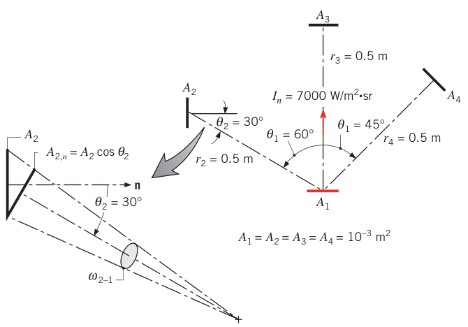
假设（Assumptions）：1. \(A_1\) 漫发射；2. \(A_1\)、\(A_2\)、\(A_3\)、\(A_4\) 都可按微元面处理（\(A_j / r_j^2 \ll 1\)）。
分析（Analysis）：
- 漫发射体的强度与方向无关，所以三个方向的强度都是
- 微元面所张立体角按式（12.7）算，\(dA_n\) 取垂直于辐射方向的投影。\(A_3\)、\(A_4\) 的法线正对辐射方向，直接用面积本身：
\(A_2\) 的法线与辐射方向差 \(\theta_2 = 30^\circ\)，投影面积 \(dA_{n,2} = A_2 \cos\theta_2\)：
- 把 \(A_1\) 也当微元面，总辐射版式（12.11）给出截获速率：
其中 \(\theta_1\) 是 \(A_1\) 法线与辐射方向的夹角。逐面代入：
点评（Comments）：
- 注意发射面的 \(\theta_1\)（60°、0°、45°）与接收面的 \(\theta_2\)、\(\theta_3\)、\(\theta_4\) 各不相同——两头的投影因子别搞混。
- 若各面相对间距平方不够小，立体角和传热速率就得对式（12.8）、（12.11）在相应面积上积分。
- 光谱分量照样可算，只要已知 \(I_\lambda\)。
- 漫发射 ≠ 各方向出去的能量一样多：把 \(A_4\) 挪到不同 \(\theta_1\) 位置（保持 \(A_4\) 正对辐射方向、\(r_4 = 0.5\ \mathrm{m}\)），\(\omega_{4-1} = 4.00 \times 10^{-3}\ \mathrm{sr}\) 不变，\(q_{1 \to 4} = [7000 \times 10^{-3} \times 4.00 \times 10^{-3}] \times \cos\theta_1\)。截获能量在 \(\theta_1 = 0^\circ\) 最大（\(28.0 \times 10^{-3}\ \mathrm{W}\)，观察者看到 \(A_1\) 的最大投影），在 \(\theta_1 \to 90^\circ\) 为零——强度不随方向变，但观察者那时根本"看不见" \(A_1\)。很多真实表面近似漫发射。
【例 12.2】由光谱分布求总投入辐射
已知（Known）：某表面投入辐射的光谱分布如图（梯形：\(G_\lambda\) 从 0 线性升到 5 \(\mu m\) 处的 1000 W/(m²·\(\mu m\))，在 5–20 \(\mu m\) 间维持 1000，再线性降回 0 于 25 \(\mu m\)）。
求（Find）：总投入辐射 \(G\)。
示意图（Schematic）：
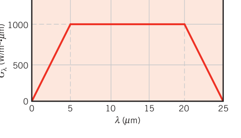
分析（Analysis）：总投入辐射由式（12.20）给出：
分段积分（就是求梯形面积）：
点评（Comments）：真实辐射源的光谱分布不会这么规矩，但"由光谱分布积出总量"的流程不变，只是积分算起来更麻烦。
12.4 黑体辐射#
要算真实不透明表面的发射功率、投入辐射、有效辐射或净辐射通量，得先知道式（12.13）、（12.18）、（12.23）、（12.28）里那些光谱强度。第一步是引入黑体（blackbody）这个理想标尺。黑体有三条特征：
- 吸收一切入射辐射，无论波长、无论方向；
- 对给定温度和波长，没有任何表面能比黑体发射更多能量；
- 黑体的发射只随波长和温度变，与方向无关——黑体是漫发射体。
作为完美吸收体和完美发射体，黑体是衡量一切真实表面辐射物性的标准。没有哪种表面精确具备黑体性质，但有个便宜的近似：内表面温度均匀的空腔，开一个小孔（图 12.11a）。辐射进入小孔后大概率要经历多次反射才能再出来，每次反射都被内表面吸掉一部分，最终几乎全部被腔体吸收——小孔就表现出黑体行为。由热力学原理还可以论证：从小孔出来的辐射只取决于腔壁温度，正是黑体发射（图 12.11b）。黑体发射是漫发射，所以离开小孔的辐射光谱强度 \(I_{\lambda,b}\) 与方向无关；腔内的辐射场（腔壁发射与反射的累积效果）与小孔出射的辐射形式相同，所以腔内存在黑体辐射场：腔内任一小表面（图 12.11c）经历的投入辐射为
且无论该表面朝向如何，投入都是漫的。空腔内是黑体辐射，与腔壁本身是高反射还是高吸收无关——这句话是 12.7 节基尔霍夫定律推导的支点。
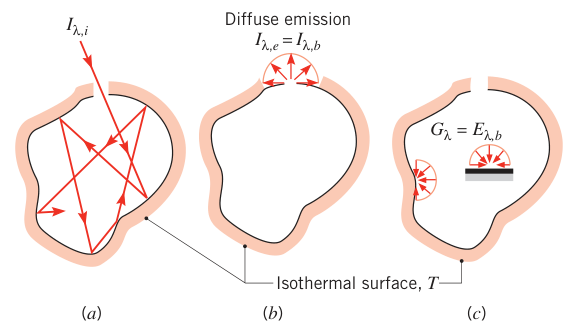
12.4.1 普朗克分布式#
黑体的光谱强度由普朗克首先确定：
其中 \(h = 6.626 \times 10^{-34}\ \mathrm{J \cdot s}\) 是普朗克常数，\(k_B = 1.381 \times 10^{-23}\ \mathrm{J/K}\) 是玻尔兹曼常数，\(c_0 = 2.998 \times 10^8\ \mathrm{m/s}\)，\(T\) 是黑体绝对温度（K）。黑体是漫发射体，由式（12.16）得它的光谱发射功率——普朗克分布式（Planck distribution，普朗克定律）：
第一、第二辐射常数：
式（12.30）画在图 12.12 上（对数纵轴），四条要点：
- 发射随波长连续变化（这条只有承认原子能级的不连续性才解释得通——普朗克的推导是量子物理最重要的发现之一）；
- 任一波长处，发射随温度升高而增大；
- 辐射集中的光谱区随温度移动：温度越高，短波占比越大；
- 太阳（近似 5800 K 黑体）的辐射有相当一部分落在可见光区；而 \(T \le 800\ \mathrm{K}\) 的发射集中在红外区，肉眼看不见。
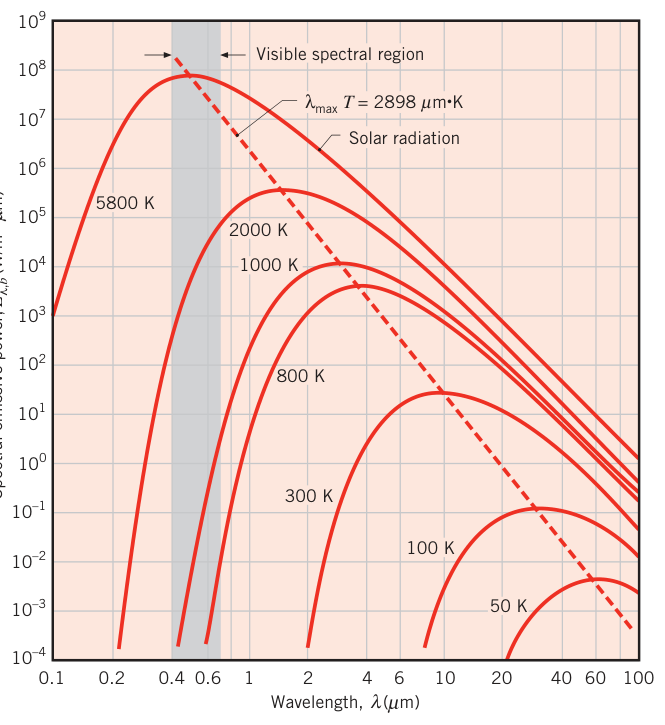
12.4.2 维恩位移定律#
图 12.12 的每条曲线都有峰值，对应波长 \(\lambda_{max}\) 随温度变。对式（12.30）求导令其为零，得维恩位移定律（Wien's displacement law）：
第三辐射常数 \(C_3 = 2898\ \mu m \cdot K\)（书末常数表的精确值为 2897.6 \(\mu m \cdot K\)，正文四舍五入，计算中两者通用）。温度升高，峰值向短波位移：太阳（5800 K）的峰值在可见光中部（\(\lambda_{max} \approx 0.50\ \mu m\)）；1000 K 黑体峰值在 \(2.90\ \mu m\)，但有少量辐射以红光出现、肉眼可见；2900 K 的钨丝灯（\(\lambda_{max} = 1\ \mu m\)）发白光，不过大部分能量仍在红外。
12.4.3 斯特藩–玻尔兹曼定律#
把普朗克分布式（12.30）代入式（12.14），黑体总发射功率为
积分结果就是斯特藩–玻尔兹曼定律（Stefan–Boltzmann law）：
一个只依赖 \(C_1\)、\(C_2\) 的常数。知道温度就能算所有波长、所有方向的发射总量——这就是第 1 章一直在用的式（1.4）。黑体发射是漫发射，由式（12.17）得黑体总强度：
12.4.4 波段辐射#
考虑光谱效应时经常要问：黑体总发射中落在某个波长区间（波段）里的份额是多少？对给定温度、区间 \(0 \to \lambda\)，这个份额是图 12.13 中阴影面积与曲线下总面积之比：
关键一步：被积函数 \(E_{\lambda,b}/\sigma T^5\) 只是波长–温度乘积 \(\lambda T\) 的函数，所以波段分数 \(F_{(0 \to \lambda)}\) 只是 \(\lambda T\) 的函数。数值列在表 12.2（黑体辐射函数表）和图 12.14 里。
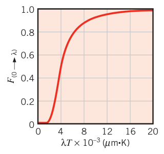
任意波段 \(\lambda_1 \to \lambda_2\) 的份额用减法：
表 12.2 黑体辐射函数（节选）
| \(\lambda T\) (\(\mu m \cdot K\)) | \(F_{(0 \to \lambda)}\) | \(I_{\lambda,b}(\lambda, T) / \sigma T^5\) [(\(\mu m \cdot K \cdot sr\))\(^{-1}\)] | \(I_{\lambda,b}(\lambda, T) / I_{\lambda,b}(\lambda_{max}, T)\) |
|---|---|---|---|
| 1,000 | 0.000321 | 0.118505 × 10⁻⁵ | 0.016406 |
| 2,000 | 0.066728 | 0.493432 × 10⁻⁴ | 0.683123 |
| 2,898 | 0.250108 | 0.722318 × 10⁻⁴ | 1.000000 |
| 4,000 | 0.480877 | 0.578064 × 10⁻⁴ | 0.800291 |
| 6,000 | 0.737818 | 0.270121 × 10⁻⁴ | 0.373965 |
| 10,000 | 0.914199 | 0.653279 × 10⁻⁵ | 0.090442 |
| 20,000 | 0.985602 | 0.623310 × 10⁻⁶ | 0.008629 |
| 40,000 | 0.997967 | 0.473891 × 10⁻⁷ | 0.000656 |
四列各有各的用法：
- 第 2 列 \(F_{(0 \to \lambda)}\)：波段分数，配合式（12.35）算任意波段；
- 第 3 列 \(I_{\lambda,b}/\sigma T^5\)：算指定波长和温度下的光谱强度，查表值乘 \(\sigma T^5\) 即可，不必回头硬算式（12.29）；
- 第 4 列 \(I_{\lambda,b}(\lambda, T)/I_{\lambda,b}(\lambda_{max}, T)\)：快速估算任意波长的强度相对峰值的比例。
【例 12.3】小黑体在大环境中的净辐射通量
已知（Known）：图 12.1 中真空里的小固体，表面温度 \(T_s\)，环境温度 \(T_{sur}\)。固体是黑体。
求（Find）：固体表面净辐射热流密度的表达式。
示意图（Schematic）：
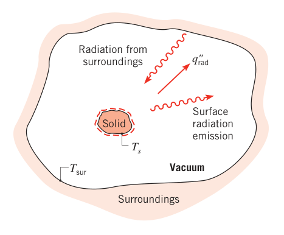
假设（Assumptions）：小固体经历的投入辐射为黑体辐射。
分析（Analysis）：黑体吸收全部投入辐射，没有反射项，式（12.28）变成发射项减投入项：
小固体发射的是黑体强度：
投入辐射也对应黑体（环境是 \(T_{sur}\) 下的黑体辐射场，见 12.4 节空腔结论）：
黑体强度是漫射的，与 \(\theta\)、\(\phi\) 无关，角度积分直接出 \(\pi\)：
这正是 \(\varepsilon = 1\) 时的式（1.7）。
点评（Comments）：这条推导补上了第 1 章"小表面对大封闭腔"公式的来龙去脉——投入辐射是 \(T_{sur}\) 下的黑体辐射场，发射是 \(T_s\) 下的黑体发射，两头都是漫射，角度因子天然配平。
【例 12.4】等温空腔小孔的黑体辐射
已知（Known）：一个大的等温封闭腔维持均匀温度 2000 K。
求（Find）：1. 腔面小孔出射辐射的发射功率；2. 10% 发射集中的短波一侧波长 \(\lambda_1\)（\(0 \to \lambda_1\) 占 10%）与长波一侧波长 \(\lambda_2\)（\(\lambda_2 \to \infty\) 占 10%）；3. 最大光谱发射功率及对应波长；4. 放进腔内的小物体受到的投入辐射。
示意图（Schematic）：
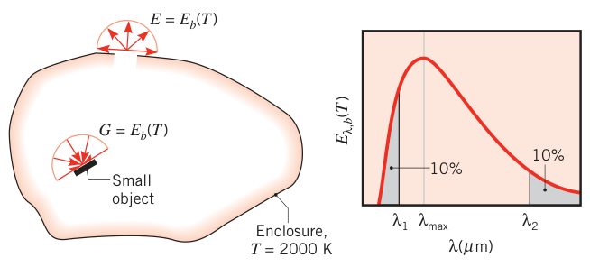
假设（Assumptions）：小孔与物体的面积相对腔面都极小。
分析（Analysis）：
- 任何等温腔小孔的出射都具有黑体辐射特征，由式（12.32）：
- \(\lambda_1\) 对应 \(F_{(0 \to \lambda_1)} = 0.10\)。查表 12.2 得 \(\lambda_1 T = 2195\ \mu m \cdot K\)，故
\(\lambda_2\) 满足 \(F_{(\lambda_2 \to \infty)} = 1 - F_{(0 \to \lambda_2)} = 0.1\)，即 \(F_{(0 \to \lambda_2)} = 0.9\)。查表 12.2 得 \(\lambda_2 T = 9382\ \mu m \cdot K\)，故
- 由维恩位移定律（12.31），\(\lambda_{max} T = 2898\ \mu m \cdot K\)：
该波长处的光谱发射功率用表 12.2 第 3 列算。对 \(\lambda_{max} T = 2898\ \mu m \cdot K\)，\(I_{\lambda,b} = 0.722 \times 10^{-4} \sigma T^5\)，代入：
漫发射乘 \(\pi\)：
- 腔内任一小物体的投入辐射可取腔壁温度下的黑体发射 \(G = E_b(T)\)：
点评（Comments）：四个小问把 12.4 节的全部工具（黑体四 feature、\(\lambda T\) 查表、维恩位移、腔内辐射场）各练了一遍。注意 \(F\) 值不落表点时要在表 12.2 的相邻行间线性插值。
【例 12.5】限定方向与波段的黑体发射
已知（Known）：某表面按 1500 K 黑体发射。
求（Find）：单位面积、方向限于 \(0^\circ \le \theta \le 60^\circ\)、波长限于 \(2\ \mu m \le \lambda \le 4\ \mu m\) 的发射速率（W/m²）。
示意图（Schematic）：
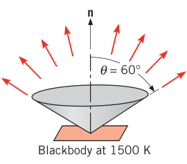
假设（Assumptions）：表面按黑体发射。
分析（Analysis）：所求即把式（12.15）的积分限砍到规定范围：
黑体是漫发射体，强度提出角度积分：
再用表 12.2 处理光谱积分——凑出 \(E_b\) 与波段分数的形状：
查表 12.2（\(T = 1500\ \mathrm{K}\)）：
代入：
点评（Comments）：方向限制砍掉 25%（半球积分只剩 \(\sin^2 60^\circ = 0.75\) 倍），光谱限制砍掉 53.5%（只有 46.5% 的能量落在 2–4 \(\mu m\)）——总半球发射功率被两项限制合力压到约十分之一。这是"波段分数 + 方向积分"的标准组合拳，第 13 章还要反复用。
12.5 实际表面的发射#
黑体是理想标尺，现在把真实表面挂上去。发射率（emissivity）定义为：该表面发射的辐射与同温度黑体发射的辐射之比。真实表面的光谱发射一般偏离普朗克分布（图 12.15a），方向分布也可能不是漫射（图 12.15b），所以发射率按"光谱 × 方向"的四种组合各有一个值。
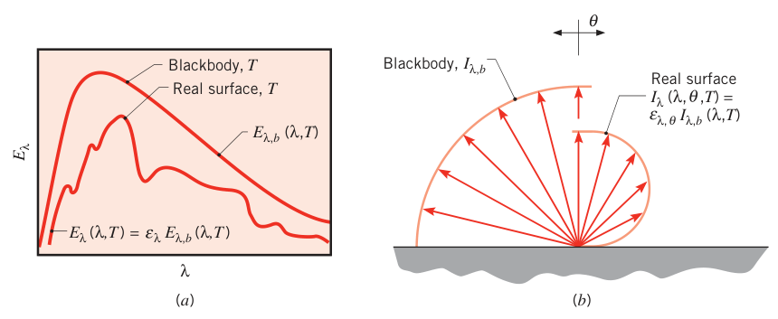
定义链条（从最细到最粗）：
- 光谱定向发射率（spectral directional emissivity）\(\varepsilon_{\lambda,\theta}(\lambda, \theta, \phi, T)\)：温度 \(T\) 的表面在波长 \(\lambda\)、方向 \((\theta, \phi)\) 发射的强度与同 \(T\)、同 \(\lambda\) 黑体强度之比：
下标 \(\lambda\)、\(\theta\) 表示"对特定波长、特定方向感兴趣"；括号里的变量表示函数依赖。分母括号里没有方向变量——黑体发射本来就与方向无关。
- 总定向发射率（total directional emissivity）\(\varepsilon_\theta(\theta, \phi, T)\)：光谱定向发射率对波长取平均：
- 光谱半球发射率（spectral hemispherical emissivity）\(\varepsilon_\lambda(\lambda, T)\)：波长 \(\lambda\) 处表面光谱发射功率与黑体光谱发射功率之比：
把式（12.13）代入，它与定向值的关系是加权平均（权重 \(\cos\theta\sin\theta\)）：
大多数表面的 \(\varepsilon_{\lambda,\theta}\) 与方位角 \(\phi\) 关系不大，把它当与 \(\phi\) 无关并算出分母（=\(\pi\)），得
- 总半球发射率（total hemispherical emissivity）\(\varepsilon(T)\)：真实表面总发射功率与黑体总发射功率之比：
它是对方向和波长的双重平均。把式（12.14）、（12.40）代入：
会用了：知道 \(\varepsilon_\lambda(\lambda, T)\)，配合式（12.30）就能算任意波长、温度下的光谱发射功率：
知道 \(\varepsilon(T)\)，发射功率就是
注意：\(\varepsilon(T)\) 形式简单，但它本身由光谱、方向特性加权而来，强烈依赖温度。
方向行为（图 12.16）：漫发射体的定向发射率是与方向无关的常数，但所有表面都偏离漫射：
- 导体（金属）：\(\varepsilon_\theta\) 在 \(0^\circ \le \theta \le 40^\circ\) 近似常数，随后随 \(\theta\) 增大而上升，接近 \(90^\circ\) 才衰减到零；
- 非导体：\(\varepsilon_\theta\) 在 \(0^\circ \le \theta \le 70^\circ\) 近似常数，随后随 \(\theta\) 增大急剧下降。
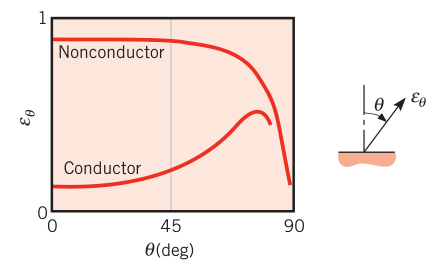
一个重要推论：虽然有偏爱的发射方向，但半球发射率 \(\varepsilon\) 与法向发射率 \(\varepsilon_n\)（\(\theta = 0\) 的值）差别不大——比值很少超出导体 \(1.0 \le \varepsilon/\varepsilon_n \le 1.3\)、非导体 \(0.95 \le \varepsilon/\varepsilon_n \le 1.0\) 的范围。所以工程上取
以上对总发射率的说法同样适用于光谱分量。
光谱行为（图 12.17）：真实表面发射偏离普朗克分布，\(\varepsilon_\lambda\) 自然随波长变，变化方式取决于材料是导体还是非导体、以及表面涂层的性质。
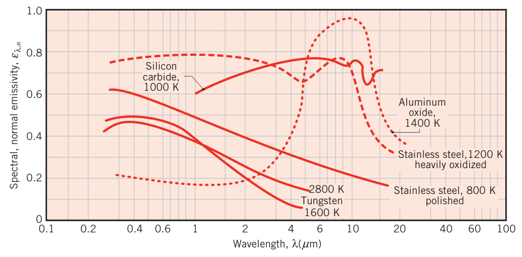
总法向发射率的量级（图 12.18、图 12.19，数值查附录 A 表 A.11），四条经验：
- 金属表面的发射率一般小：高度抛光的金、银可低到 0.02；
- 氧化层大幅抬高金属发射率：900 K 的不锈钢，抛光的 0.3，重度氧化的 0.7——同一材料差一倍多；
- 非导体的发射率大，一般超过 0.6；
- 导体的发射率随温度升高；非导体随温度可能升也可能降（对照图 12.17 看：若某材料 \(\varepsilon_{\lambda,n}\) 随波长减小而增大，温度升高后短波发射占比变大，其 \(\varepsilon_n\) 就随温度上升——式 12.43 的加权逻辑）。
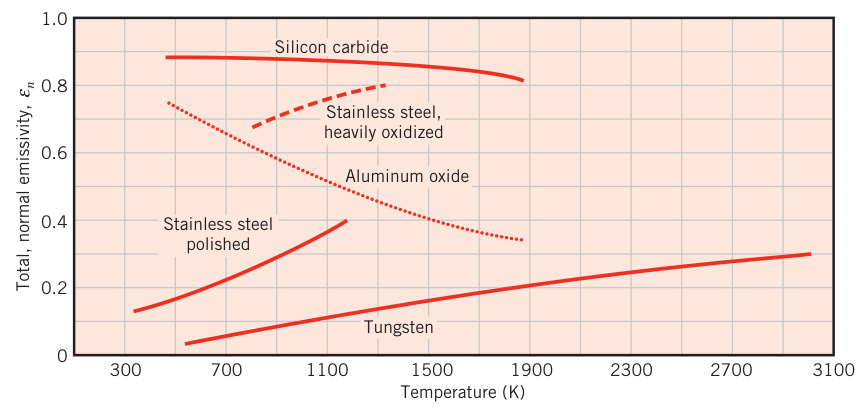
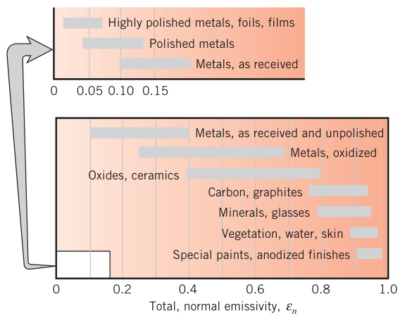
发射率强烈依赖表面的状态——制造方式、热循环史、与环境发生的化学反应都会改写它；用手册数值前先问一句"我这个表面长什么样"。
拓展：-ivity 还是 -ance
原书脚注：本书对材料辐射物性统一用 -ivity 结尾（emissivity 而非 emittance）。文献中曾有倡议把 -ance 结尾留给光学光滑、无污染的表面，但多数文献（包括本书）不做这种区分。中文同理：本书的"发射率/吸收比/反射比/透射比"对应 -ivity 系词，旧文献里"发射本领/黑度"等叫法也常见，认得就行。
【例 12.6】阶梯形光谱发射率的总量与峰值
已知（Known）：1600 K 的漫表面，其光谱半球发射率呈阶梯状：\(\varepsilon_\lambda = 0.4\)（\(0 \le \lambda < 2\ \mu m\)）、\(\varepsilon_\lambda = 0.8\)（\(2\ \mu m \le \lambda < 5\ \mu m\)）、\(\varepsilon_\lambda = 0\)（\(\lambda \ge 5\ \mu m\)）。
求（Find）：1. 总半球发射率；2. 总发射功率；3. 光谱发射功率取最大值的波长。
示意图（Schematic）：
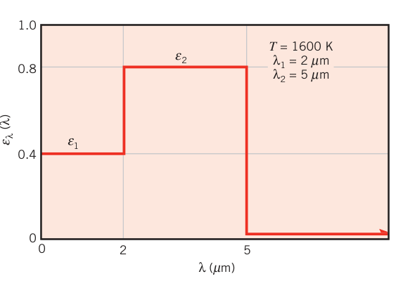
假设（Assumptions）：表面是漫发射体。
分析（Analysis）：
- 总半球发射率由式（12.43）给出，按 \(\varepsilon_\lambda\) 的台阶分段积分：
查表 12.2（\(T = 1600\ \mathrm{K}\)）：
代入：
- 总发射功率由式（12.36）：
- 若 \(\varepsilon_\lambda\) 是常数（或黑体），峰值波长直接用维恩位移定律：\(\lambda_{max} = 2898/1600 = 1.81\ \mu m\)。但这里 \(\varepsilon_\lambda\) 随波长跳变，不能直接断定。先算 \(\lambda_{max}\) 处的值：
\(\lambda_{max} T = 2898\ \mu m \cdot K\) 对应表值 \(I_{\lambda,b}/\sigma T^5 = 0.722 \times 10^{-4}\)，\(\varepsilon_\lambda(1.81\ \mu m) = 0.4\)（落在第一台阶）：
\(E_\lambda\) 在 \(\lambda < 2\ \mu m\) 的最大值就是它。再看台阶跳变点 \(\lambda_1 = 2\ \mu m\)（\(\varepsilon_\lambda\) 跳到 0.8）：查表 12.2，\(\lambda_1 T = 3200\ \mu m \cdot K\) 时 \(I_{\lambda,b}/\sigma T^5 = 0.706 \times 10^{-4}\)：
\(105.5 > 54\)，所以峰值出现在台阶跳变点
点评（Comments）：对这组 \(\varepsilon_\lambda\)，光谱发射功率随波长的变化如原书例题附图所示——\(E_\lambda\) 在 2 \(\mu m\) 处跳上台阶，随后被黑体曲线的衰减拉下来。教训：维恩位移定律只保证黑体（或 \(\varepsilon_\lambda\) 为常数）的峰值位置；\(\varepsilon_\lambda\) 有结构时，要逐段比大小。
【例 12.7】由定向发射率求半球发射率与强度
已知（Known）：金属表面 \(T = 2000\ \mathrm{K}\)、\(\lambda = 1.0\ \mu m\) 处测得光谱定向发射率的分布可近似为：\(\varepsilon_{\lambda,\theta} = 0.3\)（\(0 \le \theta < 60^\circ\)）、\(\varepsilon_{\lambda,\theta} = 0.6\)（\(60^\circ \le \theta < 80^\circ\)）、\(\varepsilon_{\lambda,\theta} = 0\)（\(\theta \ge 80^\circ\)）。
求（Find）：1. 光谱法向发射率 \(\varepsilon_{\lambda,n}\) 与光谱半球发射率 \(\varepsilon_\lambda\)；2. 法向发射的光谱强度 \(I_{\lambda,n}\) 与光谱发射功率 \(E_\lambda\)。
示意图（Schematic）：
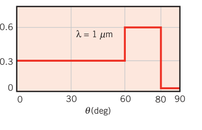
分析（Analysis）：
- 法向（\(\theta = 0\)）的值直接读出：
光谱半球发射率由式（12.42）积分（\(\int \cos\theta\sin\theta\, d\theta = \tfrac{1}{2}\sin^2\theta\)）：
- 法向强度由式（12.38）：
\(I_{\lambda,b}\) 用表 12.2 第 3 列：\(\lambda T = 2000\ \mu m \cdot K\) 时 \(I_{\lambda,b}/\sigma T^5 = 0.493 \times 10^{-4}\)：
光谱发射功率由式（12.40），其中 \(E_{\lambda,b} = \pi I_{\lambda,b} = 2.81 \times 10^5\ \mathrm{W/(m^2 \cdot \mu m)}\)：
点评（Comments）：这题把定义链走全了：测得 \(\varepsilon_{\lambda,\theta}\) → 积出 \(\varepsilon_\lambda\)（0.36，比法向值 0.3 大，因为大角度的 0.6 段有贡献）→ 结合黑体值给出强度与发射功率。金属在大角度发射更强（图 12.16），正是 \(\varepsilon_\lambda > \varepsilon_{\lambda,n}\) 的原因。
12.6 实际表面的吸收、反射与透射#
发射之外，还要管投入辐射的下场。12.3.3 节定义的光谱投入辐射 \(G_\lambda\)（W/m²·\(\mu m\)）可能从所有方向来、出自多个源；总投入辐射 \(G\) 由式（12.19）给出。
最一般的情形是投入辐射与半透明介质（水层、玻璃板）相互作用：如图 12.20，光谱分量被反射、吸收、透射，介质上的辐射平衡为
三个分量各占多少很复杂——取决于上下表面状况、波长、介质的成分与厚度，还受介质内部体积效应影响。
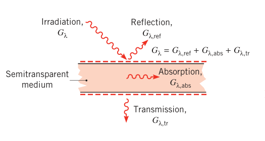
多数工程应用里介质对入射辐射不透明：\(G_{\lambda,\mathrm{tr}} = 0\)，吸收和反射退化为表面现象——由距受照表面不到一微米内的过程决定。于是可以说"表面吸收/反射了投入辐射"，吸收增加介质热内能，反射对介质无净影响。
拓展：颜色是怎么来的
除非表面热到炽白（\(T_s \ge 1000\ \mathrm{K}\)，发射进入可见区），颜色与发射无关——室温物体的发射集中在红外，肉眼看不见。颜色来自表面对可见光的选择性反射与吸收：衬衫"红"，是因为颜料优先吸收蓝、绿、黄分量，反射光里红占主导；叶子"绿"，是因为叶绿素在蓝、红两端吸收强、在绿波段优先反射；表面"黑"是吸收全部可见光，"白"是反射全部可见光。但别被眼睛骗了：雪是"白"的，只是对可见光高反射，它对红外辐射强吸收，长波行为接近黑体——判吸收能力要看全部波段，不能只看颜色。
12.6.1 吸收比#
吸收比决定表面吸收投入辐射的份额，和发射一样有方向、光谱两根轴。光谱定向吸收比（spectral directional absorptivity）\(\alpha_{\lambda,\theta}(\lambda, \theta, \phi)\)：沿 \((\theta, \phi)\) 方向入射的光谱强度中被吸收的份额：
（此定义忽略了对表面温度的依赖——对多数光谱辐射物性这个依赖很小。）光谱半球吸收比（spectral hemispherical absorptivity）\(\alpha_\lambda(\lambda)\)：光谱投入辐射中被吸收的份额：
它由定义式（12.49）给出——按入射强度加权平均：
所以 \(\alpha_\lambda\) 依赖入射辐射的方向分布，也依赖波长与表面本身。若入射辐射漫分布且 \(\alpha_{\lambda,\theta}\) 与 \(\phi\) 无关，退化为
总半球吸收比（total hemispherical absorptivity）\(\alpha\)：总投入辐射中被吸收的份额：
\(\alpha\) 依赖投入辐射的光谱分布（还有方向分布与表面本身）。对比 12.5 节：\(\varepsilon\) 近似不依赖表面温度，但由式（12.43）看它强烈依赖温度；而 \(\alpha\) 依赖的是打过来的辐射的光谱形状。
因为 \(\alpha\) 依赖投入辐射的光谱，同一表面对太阳辐射的总吸收比 \(\alpha_S\) 可能与对低温源长波辐射的吸收比差别巨大。太阳光谱近似正比于 5800 K 黑体发射，由式（12.51）：
积分用表 12.2 的波段分数函数算。
12.6.2 反射比#
反射比的严格定义天生是双向的（bidirectional）——既依赖入射方向，又依赖反射方向，全面定义很繁琐。本书全程只用一个对反射半球取平均的反射比。光谱定向反射比（spectral directional reflectivity）\(\rho_{\lambda,\theta}(\lambda, \theta, \phi)\) 是沿 \((\theta, \phi)\) 方向入射的光谱强度中被反射的份额：
光谱半球反射比（spectral hemispherical reflectivity）\(\rho_\lambda(\lambda)\) 是光谱投入辐射中被反射的份额：
总半球反射比（total hemispherical reflectivity）\(\rho\)：
反射按方向分布分两种理想化（图 12.21）：
- 漫反射（diffuse reflection）：无论入射方向如何，反射辐射的强度与反射角无关——入射线"撞散"成均匀半球；
- 镜面反射（specular reflection）：全部反射集中在一个方向，反射角等于入射角（\(\theta_2 = \theta_1\)），像镜子。
没有表面是完美的漫反射体或镜面：抛光的镜面接近后者，粗糙表面接近前者。工程计算多半按漫反射处理。
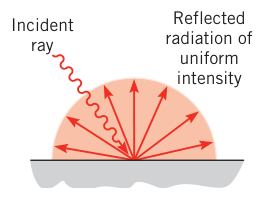
12.6.3 透射比#
半透明材料的响应严格说是个复杂问题，但用半球透射比往往能得到合理结果。光谱半球透射比（spectral hemispherical transmissivity）与总半球透射比（total hemispherical transmissivity）：
12.6.4 特殊考虑#
由辐射平衡式（12.46）与上述定义：
介质不透明时没有透射，吸收与反射都是表面过程：
知道其中一个就得到另一个。
图 12.22 画了选定不透明材料的光谱法向反射比与吸收比。玻璃、水这类短波半透明材料在长波端变得不透明——图 12.23 给了几种常见半透明材料的光谱透射率：玻璃的透射受铁含量影响；塑料（如 Tedlar）在红外区的透射高于玻璃。这些直接关系到太阳能集热器盖板选材、节能窗户设计与红外成像光学元件选材；常见盖板材料对太阳辐射的总透射率等数据见附录 A 表 A.12。
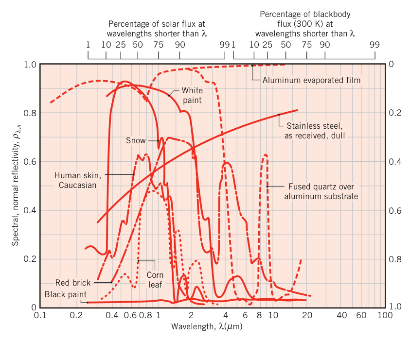
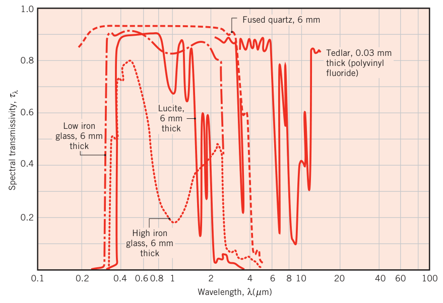
【例 12.8】由吸收比与投入辐射算总吸收比与温度走向
已知（Known）：不透明表面的光谱半球吸收比与表面处的光谱投入辐射如图：\(\alpha_\lambda = 0.2\)（\(0 \le \lambda \le 6\ \mu m\)）、6–8 \(\mu m\) 线性升至 1.0、\(1.0\)（\(8 \le \lambda \le 16\ \mu m\)）；\(G_\lambda\) 为梯形——从 2 \(\mu m\) 处的 0 线性升至 6 \(\mu m\) 处的 500 W/(m²·\(\mu m\))，6–12 \(\mu m\) 维持 500，12–16 \(\mu m\) 线性降回 0。表面初温 500 K，总半球发射率 0.8。
求（Find）：1. 光谱反射比随波长的分布；2. 总半球吸收比；3. 表面暴露于该投入辐射后温度如何变化。
示意图（Schematic）：
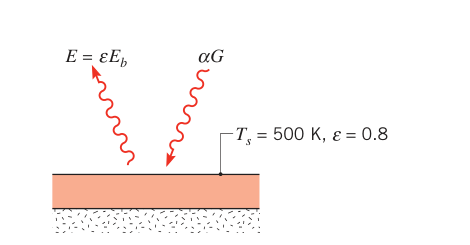
假设（Assumptions）：1. 表面不透明；2. 表面对流效应可忽略；3. 背面绝热。
分析（Analysis）：
-
由式（12.63），\(\rho_\lambda = 1 - \alpha_\lambda\)：\(\rho_\lambda = 0.8\)（\(0 \le \lambda \le 6\ \mu m\)）、6–8 \(\mu m\) 线性降至 0、\(\rho_\lambda = 0\)（\(\lambda \ge 8\ \mu m\)）。
-
总半球吸收比由式（12.51）：
分段算。分子（被吸收部分，按 \(\alpha_\lambda\) 与 \(G_\lambda\) 的分段结构）：
分母（总投入辐射，梯形面积）：
- 忽略对流，净热流密度（进表面）为
\(q''_{\mathrm{net}} > 0\)，表面温度将随时间升高。
点评（Comments）：注意 \(\alpha = 0.76\) 这个数是"这一束特定光谱的投入辐射"喂出来的——换个光谱，\(\alpha\) 就变；而 \(\varepsilon = 0.8\) 是表面在 500 K 下自己的属性。两者不相等很正常，12.7、12.8 节专门讲它们何时相等。
【例 12.9】太阳能集热器盖板玻璃的总透射比
已知（Known）：平板太阳能集热器的盖板玻璃低铁，其光谱透射比可近似为：\(\tau_\lambda = 0.90\)（\(0.3 \le \lambda \le 2.5\ \mu m\)）、\(\tau_\lambda = 0\)（其余波长）。
求（Find）：盖板玻璃对太阳辐射的总透射比。
示意图（Schematic）：
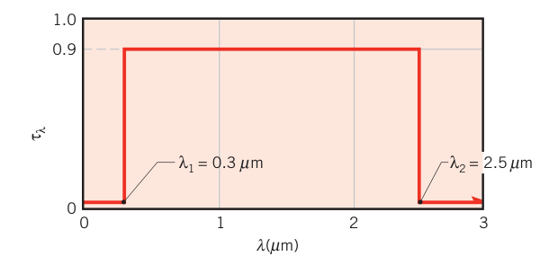
假设（Assumptions）：太阳投入辐射的光谱分布正比于 5800 K 黑体发射。
分析（Analysis）：总透射比由式（12.61）：
其中 \(G_\lambda\) 是太阳发射的贡献。既然设太阳按 5800 K 黑体发射，\(G_\lambda\) 正比于 \(E_{\lambda,b}(5800\ \mathrm{K})\)，比例常数在分子分母间消掉：
查表 12.2：
由式（12.35）：
点评（Comments）：关键在"正比"二字：盖板处的投入辐射不等于 5800 K 黑体的发射功率（\(G_\lambda \ne E_{\lambda,b}(5800\ \mathrm{K})\)），只是光谱形状相同，所以积分里可以用 \(E_{\lambda,b}\) 顶替 \(G_\lambda\)。太阳辐射有 16% 落在 \(\tau_\lambda = 0\) 的波段（\(F\) 之和 0.9329 之外的部分），玻璃总体只放进 84%——低铁玻璃正是为了把短波窗口开到最大。
12.7 基尔霍夫定律#
到目前为止，发射物性（\(\varepsilon\)）与吸收物性（\(\alpha\)）是分开定义的。12.7、12.8 两节回答：发射率和吸收比什么时候相等——这是第 13 章全部简化的根基。
推导装置：一个表面温度 \(T_s\) 的大的等温封闭腔，里面关着几个小物体（图 12.24）。物体相对腔面很小，对腔内辐射场的影响可以忽略——辐射场完全由腔面的发射与反射的累积效果决定。12.4 节说过：不管腔面辐射物性如何，这样的腔面都构成黑体空腔。所以，无论朝向如何，腔内任一物体经历的投入辐射都是漫的，且等于 \(T_s\) 下的黑体发射：
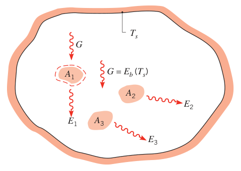
稳态下物体与腔体处于热平衡：\(T_1 = T_2 = \cdots = T_s\)，每个表面的净传热速率必须为零。对物体 1 的控制面做能量平衡：
代入式（12.64）：
这一结果对腔内每个物体都成立，于是
这就是基尔霍夫定律（Kirchhoff's law）。一个直接推论：因为 \(\alpha \le 1\)，必有 \(E(T_s) \le E_b(T_s)\)——没有真实表面的发射功率能超过同温度的黑体，黑体作为理想发射体的地位由此坐实。由总半球发射率的定义（12.36），基尔霍夫定律的另一形式是
即：等温、无净辐射换热的条件下，表面总半球发射率等于总半球吸收比。
式（12.66）的推导条件很苛刻（投入辐射必须来自与表面同温的黑体），能少用就少用。同样的推导可以在光谱条件下重做一遍，得到
它的适用条件宽得多（12.8 节证明：投入辐射漫分布、或表面漫射，二者有其一即可）。而无条件的形式只有光谱定向这一级：
这条永远成立：\(\varepsilon_{\lambda,\theta}\) 和 \(\alpha_{\lambda,\theta}\) 是表面的固有属性，不依赖发射辐射和入射辐射的光谱、方向分布。
【例 12.10】耐火砖墙：发射率 ≠ 吸收比
已知（Known）：漫射耐火砖墙，表面温度 \(T_s = 500\ \mathrm{K}\)，光谱发射率分三段：\(\varepsilon_{\lambda,1} = 0.1\)（\(0 \le \lambda < 1.5\ \mu m\)）、\(\varepsilon_{\lambda,2} = 0.5\)（\(1.5\ \mu m \le \lambda < 10\ \mu m\)）、\(\varepsilon_{\lambda,3} = 0.8\)（\(\lambda \ge 10\ \mu m\)）。墙面对着 2000 K 的煤床。
求（Find）：1. 墙的总半球发射率；2. 墙的总发射功率；3. 墙对煤床发射辐射的总吸收比。
示意图（Schematic）：
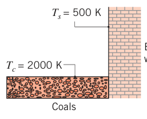
假设（Assumptions）：1. 砖墙不透明且漫射；2. 砖墙处投入辐射的光谱分布近似 2000 K 黑体发射。
分析（Analysis）：
- 总半球发射率由式（12.43），分段：
查表 12.2（按墙面温度 \(T_s = 500\ \mathrm{K}\)）：
- 总发射功率由式（12.32）、（12.36）：
- 总吸收比由式（12.52）：
表面漫射，所以 \(\alpha_\lambda(\lambda) = \varepsilon_\lambda(\lambda)\)；投入辐射近似 2000 K 黑体发射，\(G_\lambda(\lambda) = E_{\lambda,b}(\lambda, T_c)\)。于是
这次查表按煤床温度 \(T_c = 2000\ \mathrm{K}\)：
点评（Comments）：
- 发射率依赖表面温度 \(T_s\)；吸收比依赖投入辐射的光谱分布，而后者由源的温度 \(T_c\) 决定——两个数天生不是一回事。
- 这面墙不是灰体：\(\alpha \ne \varepsilon\)。原因很直观：发射对应 \(T_s = 500\ \mathrm{K}\)，光谱峰值在 \(\lambda_{max} \approx 6\ \mu m\)；投入辐射对应 \(T_c = 2000\ \mathrm{K}\)，峰值在 \(\lambda_{max} \approx 1.5\ \mu m\)。虽然 \(\varepsilon_\lambda\) 和 \(\alpha_\lambda\) 相等，但它们在发射与投入的光谱区间内都不是常数，加权出来的 \(\varepsilon\) 与 \(\alpha\) 自然不同。对给定的 \(\varepsilon_\lambda = \alpha_\lambda\) 分布，\(\varepsilon\) 随 \(T_s\) 增大而减小、\(\alpha\) 随 \(T_c\) 增大而减小，只有 \(T_s = T_c\) 时二者相等（原书附图给出这条曲线）。
12.8 灰体#
第 13 章会看到：若每个表面都能用 \(\varepsilon = \alpha\)（式 12.66），辐射换热计算就大大简化。所以必须问清：除了"投入辐射 = 同温黑体发射"这个苛刻条件，\(\varepsilon = \alpha\) 还在什么条件下成立？
从无条件成立的式（12.68）\(\varepsilon_{\lambda,\theta} = \alpha_{\lambda,\theta}\) 出发，逐级上台阶。
第一级：光谱半球相等。按定义式（12.41）与（12.49），问
既然 \(\varepsilon_{\lambda,\theta} = \alpha_{\lambda,\theta}\)，对照两边的积分形式可知：式（12.67）成立的条件是下面之一：
- 投入辐射是漫的（\(I_{\lambda,i}\) 与 \(\theta\)、\(\phi\) 无关）——对很多工程计算是合理解释；
- 表面是漫的（\(\varepsilon_{\lambda,\theta}\) 和 \(\alpha_{\lambda,\theta}\) 与方向无关）——对很多表面（尤其电非导体，图 12.16）合理。
第二级：总量相等。按定义式（12.43）与（12.52），在已有漫射条件之上再问
式（12.66）成立的条件是下面之一：
- 投入辐射对应表面温度 \(T\) 下的黑体发射：\(G_\lambda(\lambda) = E_{\lambda,b}(\lambda, T)\)，\(G = E_b(T)\)——这正是基尔霍夫定律推导时的假设；
- 表面是灰的：\(\alpha_\lambda\) 和 \(\varepsilon_\lambda\) 与波长无关。
为什么不能无条件写 \(\alpha = \varepsilon\)。总吸收比依赖投入辐射的光谱分布，而发射率不依赖。看图 12.25a：某表面的 \(\alpha_\lambda\) 在某波段接近 1、另一波段接近 0；两束不同的投入辐射 \(G_{\lambda,1}(\lambda)\) 与 \(G_{\lambda,2}(\lambda)\)（图 12.25b）打上去，得到的 \(\alpha\) 天差地别。\(\varepsilon\) 却只有一个值，与投入辐射无关。所以"某表面的 \(\alpha\) 等于 \(\varepsilon\)"这句话脱离了投入辐射就没有意义。
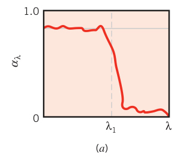
实用的灰体定义。要求 \(\alpha_\lambda\)、\(\varepsilon_\lambda\) 在整个光谱上与波长无关太苛刻了。实用定义：
灰表面（gray surface）：\(\alpha_\lambda\) 与 \(\varepsilon_\lambda\) 在投入辐射的光谱区间与表面发射的光谱区间内与波长无关。
看图 12.26 的情形：表面发射（\(E_{\lambda,b}\)）集中在 \(\lambda_1 \to \lambda_2\)、投入辐射（\(G_\lambda\)）集中在 \(\lambda_3 \to \lambda_4\)，而这两个区间内 \(\varepsilon_\lambda = \alpha_\lambda = \varepsilon_{\lambda,o}\) 是同一个常数。则
于是 \(\alpha = \varepsilon = \varepsilon_{\lambda,o}\)，灰体近似成立。但若投入辐射落在 \(\lambda < \lambda_1\) 或 \(\lambda > \lambda_4\) 的区域，灰体近似就不能用。
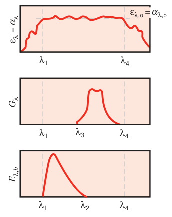
漫灰表面（diffuse gray surface）：\(\alpha_{\lambda,\theta}\)、\(\varepsilon_{\lambda,\theta}\) 与方向和波长都无关的表面——方向无关给"漫"，波长无关给"灰"。它同时满足式（12.66）与（12.67），是后续章节（尤其第 13 章）的标准工作假定。不过灰体假定虽然在很多实际应用里合理，使用时要留神：投入辐射与表面发射的光谱区相距很远时（比如太阳辐照 vs 低温表面发射），千万别随手写 \(\alpha = \varepsilon\)。
【例 12.11】插入炉中的金属小球：α 与 ε 随时间演变
已知（Known）：小实心金属球，表面涂层不透明、漫射，光谱吸收比分两段：\(\alpha_\lambda = 0.8\)（\(\lambda < 5\ \mu m\)）、\(\alpha_\lambda = 0.1\)（\(\lambda \ge 5\ \mu m\)）。球初始均匀温度 300 K，放入壁温 1200 K 的大炉子中。
求（Find）：1. 初始条件下涂层的总半球吸收比与总半球发射率；2. 球在炉中放很久之后（稳态）的 \(\alpha\) 与 \(\varepsilon\)。
示意图（Schematic）：
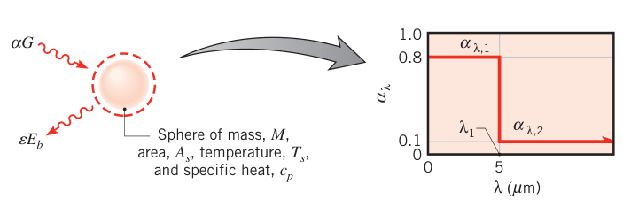
假设（Assumptions）：1. 涂层不透明且漫射；2. 炉表面远大于球面，投入辐射近似 \(T_f = 1200\ \mathrm{K}\) 的黑体发射。
分析（Analysis）：
- 总半球吸收比由式（12.52），投入辐射 \(G_\lambda = E_{\lambda,b}(T_f) = E_{\lambda,b}(\lambda, 1200\ \mathrm{K})\)：
查表 12.2（按炉温 \(T_f = 1200\ \mathrm{K}\)）：
总半球发射率由式（12.43）。涂层漫射，\(\varepsilon_\lambda = \alpha_\lambda\)，按球面温度 \(T_s = 300\ \mathrm{K}\) 查表：
- 涂层的光谱特性与炉温都不变，所以 \(\alpha = 0.62\) 不随时间变。但 \(T_s\) 随时间上升，\(\varepsilon\) 跟着变：球温升高后，发射向短波移，落在 \(\alpha_\lambda = 0.8\) 的高吸收波段的份额越来越大。足够长时间后 \(T_s = T_f = 1200\ \mathrm{K}\)——这恰好是基尔霍夫定律的推导条件，所以必有 \(\varepsilon = \alpha = 0.62\)。
点评（Comments）：
- 终态 \((T_s = T_f)\) 正是基尔霍夫定律成立的热平衡条件，\(\varepsilon = \alpha\) 是必然；初态（300 K 的球面对 1200 K 的炉壁）不满足条件，\(\varepsilon = 0.11 \ne \alpha = 0.62\)，差了近 6 倍。
- 把球当集总电容、忽略对流，球的热平衡为
解这个微分方程可得 \(T(t)\)，且 \(\varepsilon\) 随时间的漂移必须包含在解里。升温过程中"吸得多、放得少"（\(\alpha > \varepsilon\)），球被快速加热——这正是光谱选择性涂层的用途。
12.9 环境辐射#
太阳辐射通过光合作用满足人类对食物、纤维和燃料的需求；通过热过程与光伏过程，它还有潜力提供大量热与电。太阳辐射 + 地球陆地海洋表面的发射合称环境辐射（environmental radiation）；它与大气的相互作用决定着地球的温度。
12.9.1 太阳辐射#
太阳是直径 \(1.39 \times 10^9\ \mathrm{m}\) 的近球形辐射源，距地球 \(1.50 \times 10^{11}\ \mathrm{m}\)，发射近似 5800 K 黑体。辐射在太空中传播时按球面扩散衰减：到地球大气层外缘，通量已按 \((r_s/r_d)^2\) 缩水（\(r_s\) 太阳半径、\(r_d\) 日地距离）。太阳常数（solar constant）\(S_c\) 定义为：地球处于日地平均距离时，大气层外缘垂直于太阳光线表面上的太阳辐射通量（图 12.27）：
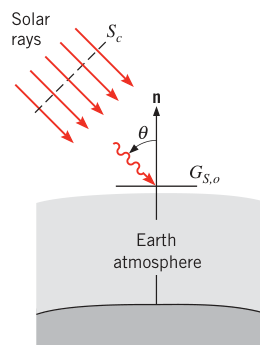
对水平表面（与地面平行），太阳辐射像一束接近平行的光线，与表面法线夹 \(\theta\) 角（天顶角）。水平面的大气层外太阳投入辐射（extraterrestrial solar irradiation）\(G_{S,o}\) 随地理纬度、时刻和季节变：
修正因子 \(f\) 反映地球椭圆轨道的偏心（\(0.97 \le f \le 1.03\)）。按时间和地表面积平均，地球接收到
的太阳投入辐射（投影面积 \(\pi r_e^2\) 截住、球面 \(4 \pi r_e^2\) 摊平），地球直径 \(d_e = 2 r_e = 1.27 \times 10^7\ \mathrm{m}\)。
拓展：1368 还是 1361
本书（2011 年第 7 版）取 \(S_c = 1368\ \mathrm{W/m^2}\)。2011 年 Kopp 与 Lean 用卫星总辐射测量给出的更精确值为约 1361 W/m²，近年文献多采用此值。做题以教材数值为准，读新文献时留意这 0.5% 的差异。另外脚注提醒：太阳常数名不副实——太阳发射有 11 年黑子活动周期，峰值发射偏差约 +0.65 W/m²，"常数"只是长时间平均。
光谱与大气改性。大气层外太阳投入辐射的光谱近似 5800 K 黑体（图 12.28a），集中在短波区（\(0.2\ \mu m \lesssim \lambda \lesssim 3\ \mu m\)），峰值约 0.50 \(\mu m\)。穿过大气时被大幅改造：
- 吸收：O₃（臭氧）在紫外区强吸收——0.4 \(\mu m\) 以下大幅衰减、0.3 \(\mu m\) 以下全灭；可见区有 O₃、O₂ 的少量吸收；近、远红外区由水汽主导；整个太阳光谱区间还有灰尘与气溶胶（包括化石燃料燃烧产物烟灰）的连续吸收。
- 散射（图 12.29）：瑞利散射（Rayleigh scattering，分子散射）由极小的气体分子引起，条件是分子有效直径与波长之比 \(\pi D/\lambda \ll 1\)，辐射向所有方向近乎均匀地散开——天空的蓝色与阳光的漫射都来自它。米氏散射（Mie scattering）由较大的灰尘、烟灰颗粒引起，条件是 \(\pi D/\lambda \approx 1\)，散射集中在入射方向附近——米氏散射的辐射几乎都沿太阳光线方向打到地面。
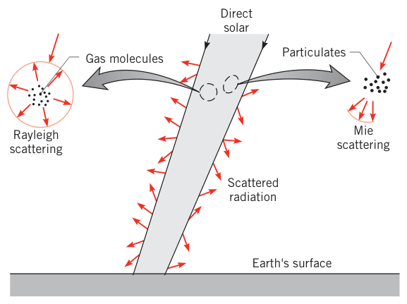
12.9.2 大气辐射平衡#
大气不只从上面收到太阳投入辐射，还从下面收到地球表面的辐射。地球平均温度约 290 K，所以向上传播的辐射集中在长波端（图 12.28b）：地表发射的光谱分布平滑（这也是多数工程表面的特征），同样被大气吸收和散射改造——水汽全谱吸收，臭氧在 9 \(\mu m\) 附近强吸收，CO₂ 在 13–16 \(\mu m\) 强吸收。8–13 \(\mu m\) 的大气窗口（atmospheric window）里，地表发射的绝大部分直通大气层外缘（臭氧强吸收的那一小段除外）。长波辐射同样受大气中颗粒物与气溶胶的瑞利、米氏散射影响。
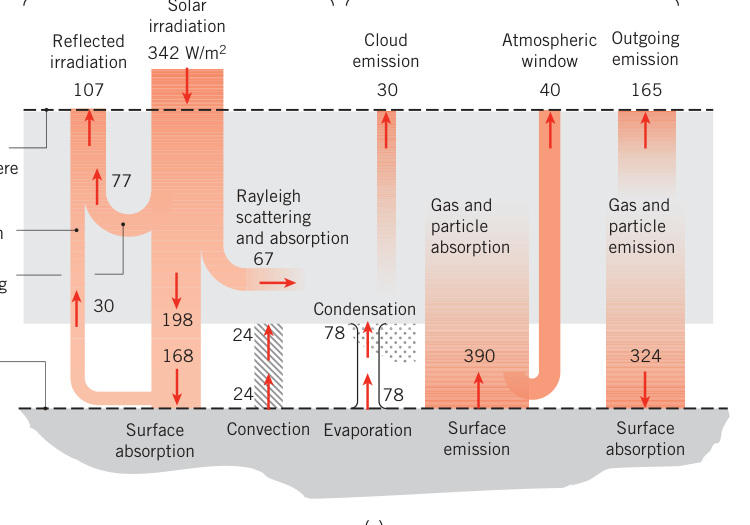
吸收与散射对上行、下行辐射的净效果都是加热大气（离开大气的辐射能量低于对应进入的辐射），这部分加热被大气成分自身的辐射发射（冷却）平衡。图 12.28c 是一张代表性的平衡收支图（温和、多云条件），数字值得逐项走一遍：
- 短波账：大气层外 342 W/m²。77 W/m² 被反射回太空（主要是瑞利散射），67 W/m² 被大气吸收（烟灰、灰尘、云），198 W/m² 到达地面——其中 30 W/m² 被地面反射回太空、168 W/m² 被地面吸收。（77 + 30 = 107 W/m² 的总反射。）
- 长波账：地表时间平均发射 390 W/m²，除 40 W/m² 经大气窗口直通太空外，350 W/m² 被大气吸收。大气还收入短波吸收（67）+ 地表对流（24）+ 凝结降水（78）。加热的大气向长波发射：165 W/m² 出大气层顶、324 W/m² 下来喂给地面；云发射再贡献 30 W/m²。
- 两本账各自平衡：大气层顶 40 + 165 + 30 + 107 = 342 ✓；地面 168 + 324 = 390 + 24 + 78 = 492 ✓。
真实条件并不平衡：人类活动（主要是化石燃料燃烧）推高大气中 CO₂ 与气溶胶含量。CO₂ 增加使地表发射被吸收在更贴近地面的层次，大气层顶向外的长波发射（165 W/m²）减少、到达地面的辐射（324 W/m²）增加——大气层顶的净传热指向大气，这个量叫辐射强迫（radiative forcing），大气温度随之上升。书里还提醒了一个反讽：工程师把燃烧做得更高效、更清洁，烟灰气溶胶减少，本该是健康收益，但短波反射（107 W/m²）随之减少，反而可能推高大气温度、改变对流与降水格局。化石燃料燃烧与环境辐射的耦合复杂而深远。
12.9.3 地面太阳投入辐射#
落到地面的太阳辐射里（图 12.30）：未经散射（或吸收）直接穿透大气的部分沿天顶角方向来，叫直射辐射（direct radiation）；散射部分从所有方向入射（强度在直射方向附近最大），晴天约占太阳辐射总量的 10%，阴天可接近 100%。散射分量常近似为与方向无关——漫射（diffuse approximation，图 12.30b）。
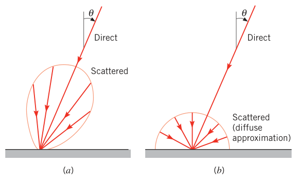
环境辐射里的长波部分包括地表发射与大气成分的气体发射。地表发射按常规算：
地表发射率一般接近 1（水约 0.97）。用 \(\varepsilon = 0.97\) 和图 12.28c 的地表发射 390 W/m² 反推，地球有效辐射温度 \(T = 291\ \mathrm{K}\)。发射集中在约 4–40 \(\mu m\)，峰值约 10 \(\mu m\)（图 12.28b）。
大气逆辐射：向下打到地表的大气发射主要来自 CO₂ 与 H₂O，集中在 5–8 \(\mu m\) 和 13 \(\mu m\) 以上。它的光谱分布虽然不是黑体，但对地表的投入贡献可以用式（12.32）估计：
\(T_{\mathrm{sky}}\) 叫天空有效温度（effective sky temperature），取决于大气状况：图 12.28c 的温和多云条件下 \(G_{\mathrm{atm}} = 324\ \mathrm{W/m^2}\)、\(T_{\mathrm{sky}} = 275\ \mathrm{K}\)；冷晴夜可低到约 230 K；暖多云高到约 285 K。夜间辐射降温的原理就在这：凉而晴的夜里 \(T_{\mathrm{sky}}\) 很小，露天的水池即便气温还高于 273 K 也可能结冰——水面把热量以长波辐射丢给"很冷"的天空，收回来的大气逆辐射不够填坑。
拓展：为什么选择性表面值钱
短波物性与长波物性可以差很远（图 12.17、图 12.22）。太阳辐射集中在短波、地表发射在长波，所以很多表面对太阳辐射不能按灰体处理——对太阳的吸收比 \(\alpha_S\) 与常温发射率 \(\varepsilon\) 是两个独立的数。表 12.3 列出图 12.22 各表面对应的 \(\alpha_S\)、\(\varepsilon(300\ \mathrm{K})\) 与比值 \(\alpha_S/\varepsilon\)：
| 表面 | \(\alpha_S\) | \(\varepsilon\) (300 K) | \(\alpha_S/\varepsilon\) |
|---|---|---|---|
| 蒸镀铝膜 | 0.09 | 0.03 | 3.0 |
| 铝膜上的熔融石英 | 0.19 | 0.81 | 0.24 |
| 金属基底上的白漆 | 0.21 | 0.96 | 0.22 |
| 金属基底上的黑漆 | 0.97 | 0.97 | 1.0 |
| 不锈钢（原表面，暗） | 0.50 | 0.21 | 2.4 |
| 红砖 | 0.63 | 0.93 | 0.68 |
| 人皮肤（白人） | 0.62 | 0.97 | 0.64 |
| 雪 | 0.28 | 0.97 | 0.29 |
| 玉米叶 | 0.76 | 0.97 | 0.78 |
\(\alpha_S/\varepsilon\) 小（白漆 0.22、石英镀层 0.24）适合排热：白天少吸太阳、夜里猛向天空辐射——卫星热控与屋顶降温涂层的思路。大（蒸镀铝膜 3.0）反而适合保温。要做太阳能集热，理想的是黑漆（\(\alpha_S = 0.97\)）配低 \(\varepsilon\)——例 12.12 的选择性吸收面（\(\alpha_S = 0.95\)、\(\varepsilon = 0.1\)）就是专为这个造的。
【例 12.12】无盖板太阳能集热器的有用热与效率
已知（Known）：无盖板平板太阳能集热器，选择性吸收面发射率 0.1、对太阳辐射的吸收比 0.95。某时刻吸收面温度 \(T_s = 120^\circ\mathrm{C}\)，太阳投入辐射 \(G_S = 750\ \mathrm{W/m^2}\)，天空有效温度 \(-10^\circ\mathrm{C}\)，环境气温 \(T_\infty = 30^\circ\mathrm{C}\)。晴天静风条件的对流换热系数可按下式估算：
求（Find）：1. 集热器的有用热移出速率 \(q''_u\)（W/m²）；2. 对应的集热效率 \(\eta\)。
示意图（Schematic）：
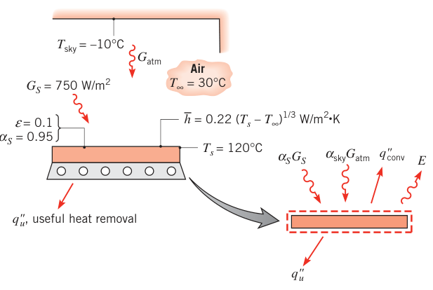
假设（Assumptions）：1. 稳态条件；2. 集热器底部保温良好；3. 吸收面漫射。
分析（Analysis）：
- 对吸收面做能量平衡：
大气逆辐射由式（12.73）：\(G_{\mathrm{atm}} = \sigma T_{\mathrm{sky}}^4\)。大气逆辐射的光谱区间与表面发射大致相同，可取 \(\alpha_{\mathrm{sky}} \approx \varepsilon = 0.1\)。对流项合并 \(h(T_s - T_\infty) = 0.22\,(T_s - T_\infty)^{4/3}\)。于是
换算绝对温度：\(T_s = 393\ \mathrm{K}\)、\(T_{\mathrm{sky}} = 263\ \mathrm{K}\)。逐项代入：
- 集热效率定义为从太阳投入辐射中提取的有用能份额：
点评（Comments）：
- \(G_{\mathrm{atm}}\) 的光谱范围与 \(G_S\) 完全不同，所以不能假设 \(\alpha_{\mathrm{sky}} = \alpha_S\)——这里用的是 \(\alpha_{\mathrm{sky}} \approx \varepsilon = 0.1\)（对长波的吸收比），而 \(\alpha_S = 0.95\)（对太阳短波的吸收比）。两个"吸收比"各管一段光谱，这正是 12.6.1 节 \(\alpha\) 依赖光谱分布的直接应用。
- 静风下对流换热系数极低：\(h = 0.22 \times 90^{1/3} \approx 1\ \mathrm{W/(m^2 \cdot K)}\)。若把 \(h\) 提到 5 W/(m²·K)，\(q''_u\) 降到 154 W/m²、效率降到 0.21——一块盖板能显著压低吸收面的对流（和辐射）损失，这就是市售集热器都带玻璃盖板的原因（对照例 12.9：低铁盖板对太阳辐射 \(\tau = 0.84\)，短波进得来，长波出不去）。
12.10 小结#
这一章的"难度"大部分在术语上。用一张修饰词矩阵收拢全部物性：两个光谱修饰词（光谱的 spectral / 总的 total）× 两个方向修饰词（定向的 directional / 半球的 hemispherical），四种物性各有一条从最细到最粗的链条：
- 发射率：\(\varepsilon_{\lambda,\theta} \to \varepsilon_\theta \to \varepsilon_\lambda \to \varepsilon\)（式 12.38 → 12.39 → 12.40 → 12.36）
- 吸收比：\(\alpha_{\lambda,\theta} \to \alpha_\lambda \to \alpha\)（式 12.47 → 12.48 → 12.51）
- 反射比：\(\rho_{\lambda,\theta} \to \rho_\lambda \to \rho\)（式 12.54 → 12.55 → 12.57）
- 透射比：\(\tau_\lambda \to \tau\)（式 12.59；工程上只用半球定义）
强度与通量的换算规则统一记成一句：漫射条件下，通量 = \(\pi \times\) 强度——发射 \(E_\lambda = \pi I_{\lambda,e}\)、投入 \(G_\lambda = \pi I_{\lambda,i}\)、有效 \(J_\lambda = \pi I_{\lambda,e+r}\)，差别只在强度上标 e、i、e+r。
工具链：普朗克分布式（12.30）→ 维恩位移（12.31）→ 斯特藩–玻尔兹曼（12.32）→ 波段分数表 12.2（配合式 12.34、12.35 查 \(\lambda T\)）。物性链：黑体标尺 → 四级发射率 → 吸收/反射/透射 → 基尔霍夫定律（12.65–12.68）→ 灰体与漫灰表面。应用链：太阳常数（12.71）→ 大气改性 → 地表发射（12.72）→ 天空有效温度（12.73）。
原书章末自测问题（12.10 节复习用）
- 辐射的本质是什么？哪两个重要特征刻画辐射？
- 表面辐射发射的物理起源是什么？发射如何影响材料的热能？
- 热辐射集中在电磁波谱的哪个区段？
- 什么是表面发射的光谱强度？它依赖哪些变量？
- 球面度是什么？半球对应多少球面度？
- "光谱的"与"总的"区别？"定向的"与"半球的"区别？
- 什么是总发射功率？它在表面能量平衡中扮演什么角色？
- 什么是漫发射体？对它，强度与总发射功率什么关系？
- 什么是投入辐射？入射辐射漫分布时它与强度什么关系？
- 什么是有效辐射？总有效辐射与总投入辐射在表面能量平衡中的角色？
- 黑体有哪些特征？自然界存在严格意义的黑体吗？黑体行为在辐射分析中的主要作用？
- 什么是普朗克分布？什么是维恩位移定律？
- 凭记忆画出三个温度 \(T_1 > T_2 > T_3\) 的黑体光谱分布，标出要点。
- 室温表面的发射集中在哪个光谱区？1000°C 表面呢？太阳表面呢？
- 什么是斯特藩–玻尔兹曼定律？如何求黑体在指定温度下的总强度？
- 如何估算大等温封闭腔中小表面的总投入辐射？
- "总半球发射率"中"总"与"半球"各指什么？
- 发射的天顶角趋近 90° 时，材料的定向发射率如何变化（导体/非导体分别说）？
- 若某材料的光谱发射率随波长增大而增大，其总发射率随温度如何变？
- 抛光金属与氧化金属谁的发射率大？耐火砖与冰呢？
- 半透明材料受照时伴随哪些过程？不透明材料呢？
- 玻璃和水是半透明还是不透明材料？
- 材料的颜色由其对红外辐照的响应决定吗？温度如何影响颜色？
- 雪算红外辐射的好吸收体还是好反射体？
- 吸收入射辐射对材料热能有何影响？反射呢？
- 固定温度的不透明表面，总吸收比会因投入辐射来自室温源还是太阳而不同吗？反射比呢？发射率呢？
- 什么是漫反射体？什么是镜面反射体？表面粗糙度如何影响反射性质？
- 光谱定向发射率与吸收比在什么条件下相等？光谱半球的呢？总半球的呢？
- 什么是灰表面？
- 大气的气体与气溶胶含量如何改造下行太阳辐射的光谱？如何改造上行地表发射的光谱？
- 什么是辐射强迫？它对地球大气温度有何影响？
- 如何由大气辐射平衡算地球的有效辐射温度？什么是天空有效温度？如何由大气辐射平衡确定它？
- 大气层外的太阳辐射方向性如何？地面呢？
- 瑞利散射与米氏散射的主要区别是什么？在太阳与环境辐射的语境下它们如何影响大气温度？人类活动可能如何影响大气中的辐射散射、吸收与发射？
坑与陷阱#
8 个容易踩的坑
- 强度按投影面积、通量按实际面积：\(I\) 的定义里藏着 \(dA\cos\theta\)（式 12.10），所有半球积分的被积函数因此多一个 \(\cos\theta\)。凡是"强度换通量"或"通量换强度"，先问自己用的哪个面积。
- 半球是 \(2\pi\ \mathrm{sr}\)，但 \(E = \pi I\)：立体角积分式（12.9）给出 \(2\pi\)；漫发射时 \(\cos\theta\sin\theta\) 积分又折半，才是 \(\pi\)（式 12.16）。两个数背反了，整章的换算全错。
- 立体角的 \(\sin\theta\) 别丢：\(d\omega = \sin\theta\, d\theta\, d\phi\)（式 12.8）。\(\theta = 0\)（正对法线）附近单位天顶角对应的立体角小，\(\theta \to 90^\circ\) 附近大——这就是"极区经线圈变密"的几何。
- \(\lambda_{max}\) 是"每波长"的峰：维恩位移 \(\lambda_{max} T = 2898\ \mu m \cdot K\) 只对黑体（或 \(\varepsilon_\lambda\) 为常数的表面）成立；\(\varepsilon_\lambda\) 有台阶时峰值会移位（例 12.6：维恩给 1.81 \(\mu m\)，真实峰在 2 \(\mu m\)）。另外室温物体 \(\lambda_{max} \approx 10\ \mu m\)，在红外——别拿可见光直觉找峰。
- 波段分数只认 \(\lambda T\)：查表 12.2 前先算 \(\lambda T\)（单位 \(\mu m \cdot K\)），表不落点就线性插值；任意波段用 \(F_{(0 \to \lambda_2)} - F_{(0 \to \lambda_1)}\)（式 12.35），不要直接去积普朗克公式。
- \(\varepsilon\) 与 \(\alpha\) 的相等是有条件的：\(\varepsilon_{\lambda,\theta} = \alpha_{\lambda,\theta}\) 无条件；\(\varepsilon_\lambda = \alpha_\lambda\) 要"投入漫或表面漫"；\(\varepsilon = \alpha\) 还要"灰或同温黑体投入辐射"。例 12.10（\(\varepsilon = 0.61\)、\(\alpha = 0.395\)）和例 12.11（\(\varepsilon = 0.11\)、\(\alpha = 0.62\)）都是现成的反例。看到太阳辐射场景就写 \(\alpha = \varepsilon\)，是本章最经典的错误。
- 发射率与吸收比的"温度归属"不同：\(\varepsilon\) 按表面自己的温度查表 12.2 加权（例 12.10 用 \(T_s = 500\ \mathrm{K}\)）；\(\alpha\) 按辐射源的温度加权（同一题用 \(T_c = 2000\ \mathrm{K}\)）。两把 \(\lambda T\) 的尺子别拿混。
- 辐射温度必须开尔文、灰体假定看光谱距离：所有 \(T^4\) 项（式 12.32、12.6、12.72、12.73）必须用 K；投入辐射与表面发射光谱区相距远时（太阳 vs 常温表面），灰体假定失效，必须用 \(\alpha_S\) 和 \(\varepsilon\) 两个数分开记账（例 12.12 的 \(\alpha_{\mathrm{sky}} \ne \alpha_S\)）。
速览#
- 四个通量：发射功率 \(E = \varepsilon\sigma T_s^4\)；投入辐射 \(G\)；有效辐射 \(J = E + \rho G\)（不透明）；净辐射通量 \(q''_{\mathrm{rad}} = J - G = \varepsilon\sigma T_s^4 - \alpha G\)。
- 立体角 \(d\omega = \sin\theta\, d\theta\, d\phi\)，半球 \(2\pi\ \mathrm{sr}\)；强度 \(I\) 按投影面积 \(dA\cos\theta\) 定义，单位 W/(m²·sr·\(\mu m\))。
- 漫射三连：\(E_\lambda = \pi I_{\lambda,e}\)、\(G_\lambda = \pi I_{\lambda,i}\)、\(J_\lambda = \pi I_{\lambda,e+r}\)——通量 = \(\pi \times\) 强度。
- 黑体三特征：吸光一切、同温发射最强、漫发射。等温空腔小孔就是黑体，腔内 \(G_\lambda = E_{\lambda,b}(\lambda, T)\)。
- 普朗克分布式（12.30）→ 维恩位移 \(\lambda_{max} T = 2898\ \mu m \cdot K\) → 斯特藩–玻尔兹曼 \(E_b = \sigma T^4\)（\(\sigma = 5.67 \times 10^{-8}\ \mathrm{W/(m^2 \cdot K^4)}\)）→ \(I_b = \sigma T^4/\pi\)。
- 波段分数 \(F_{(0 \to \lambda)} = f(\lambda T)\) 查表 12.2；\(F_{(\lambda_1 \to \lambda_2)} = F_{(0 \to \lambda_2)} - F_{(0 \to \lambda_1)}\)；第 3 列 \(I_{\lambda,b}/\sigma T^5\) 免去硬算普朗克公式。
- 发射率四级：\(\varepsilon_{\lambda,\theta} \to \varepsilon_\theta \to \varepsilon_\lambda \to \varepsilon\)；工程上 \(\varepsilon \approx \varepsilon_n\)（导体比值至多 1.3，非导体不小于 0.95）；金属发射率小且随温度升，非导体大（>0.6），氧化层大幅抬升金属发射率。
- \(\rho + \alpha + \tau = 1\)（不透明 \(\rho + \alpha = 1\)）；\(\alpha\) 依赖投入辐射的光谱与方向，对太阳的 \(\alpha_S\) 用 5800 K 黑体权重（式 12.53）。
- 基尔霍夫链：\(\varepsilon_{\lambda,\theta} = \alpha_{\lambda,\theta}\) 恒成立 → \(\varepsilon_\lambda = \alpha_\lambda\) 需漫（投入或表面）→ \(\varepsilon = \alpha\) 需灰（或同温黑体投入辐射）；漫灰表面是第 13 章的标准假定。
- 环境：\(S_c = 1368\ \mathrm{W/m^2}\)、全球平均 342 W/m²；太阳光谱 ≈ 5800 K 黑体；大气窗口 8–13 \(\mu m\)；\(G_{\mathrm{atm}} = \sigma T_{\mathrm{sky}}^4\)（230–285 K）；选择性表面用 \(\alpha_S/\varepsilon\) 定角色（小则排热、大则集热）。
术语速查#
| 英文 | 中文 | 一句话 |
|---|---|---|
| thermal radiation | 热辐射 | 物质因有限温度发射的电磁能量，约 0.1–100 μm |
| spectral | 光谱的（单色的） | 指特定波长分量，下标 \(\lambda\) |
| total | 总的 | 对所有波长积分 |
| directional | 定向的 | 指特定方向，下标 \(\theta\) |
| hemispherical | 半球的 | 指表面上方的所有方向 |
| diffuse | 漫射 | 强度与方向无关（漫发射/漫反射/漫入射） |
| solid angle | 立体角 | \(d\omega = \sin\theta\, d\theta\, d\phi\)，单位 sr，半球 2π sr |
| steradian | 球面度 | 立体角单位，\(d\omega = dA_n/r^2\) |
| intensity | 辐射强度 | 每投影面积、每立体角、每波长的辐射速率，W/(m²·sr·μm) |
| emissive power | 发射功率 | 单位表面积所有方向发射的速率 \(E\)，W/m² |
| irradiation | 投入辐射 | 单位面积入射辐射速率 \(G\)，W/m² |
| radiosity | 有效辐射 | 离开表面的全部辐射 \(J = E + \rho G\)，W/m² |
| net radiative flux | 净辐射热流密度 | \(q''_{\mathrm{rad}} = J - G = \varepsilon\sigma T_s^4 - \alpha G\) |
| blackbody | 黑体 | 吸收一切、同温发射最强、漫发射的理想体，下标 b |
| Planck's law | 普朗克分布式 | 黑体光谱分布 \(E_{\lambda,b} = C_1/\lambda^5[\exp(C_2/\lambda T) - 1]\) |
| Wien's displacement law | 维恩位移定律 | 峰值波长轨迹 \(\lambda_{max} T = 2898\ \mu m \cdot K\) |
| Stefan–Boltzmann law | 斯特藩–玻尔兹曼定律 | 黑体总发射 \(E_b = \sigma T^4\) |
| band emission fraction | 波段分数 | \(F_{(0 \to \lambda)}\)：0 到 λ 的发射份额，只是 λT 的函数 |
| emissivity | 发射率 | 表面发射与同温黑体发射之比 \(\varepsilon\)，四级修饰词体系 |
| absorptivity | 吸收比 | 吸收的投入辐射份额 \(\alpha\)，依赖投入辐射光谱 |
| reflectivity | 反射比 | 反射的投入辐射份额 \(\rho\)；双向性质，本书用半球平均 |
| transmissivity | 透射比 | 透射的投入辐射份额 \(\tau\) |
| gray surface | 灰表面（灰体） | 光谱物性在发射与投入的波段内与波长无关 |
| diffuse-gray surface | 漫灰表面 | 方向与波长都无关的表面，第 13 章工作假定 |
| Kirchhoff's law | 基尔霍夫定律 | 热平衡下 \(\varepsilon = \alpha\)；光谱定向形式恒成立 |
| specular / diffuse reflection | 镜面反射 / 漫反射 | 反射角等于入射角 / 反射强度均匀分布 |
| solar constant | 太阳常数 | 大气层外法向太阳通量 \(S_c = 1368\ \mathrm{W/m^2}\) |
| zenith angle | 天顶角 | 太阳光线与水平面法线的夹角 \(\theta\) |
| atmospheric window | 大气窗口 | 8–13 μm，地表发射直通太空的波段 |
| effective sky temperature | 天空有效温度 | 按 \(G_{\mathrm{atm}} = \sigma T_{\mathrm{sky}}^4\) 反推的天空温度，230–285 K |
| Rayleigh / Mie scattering | 瑞利散射 / 米氏散射 | 分子尺度散射（各向均匀）/ 颗粒散射（沿入射方向） |
| radiative forcing | 辐射强迫 | 大气层顶净辐射换热的变化，正值对应大气升温 |